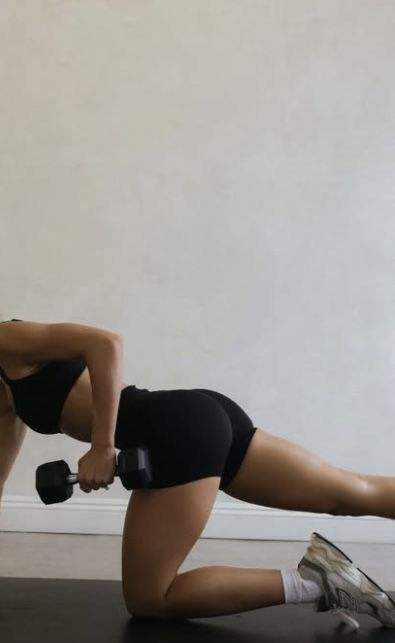
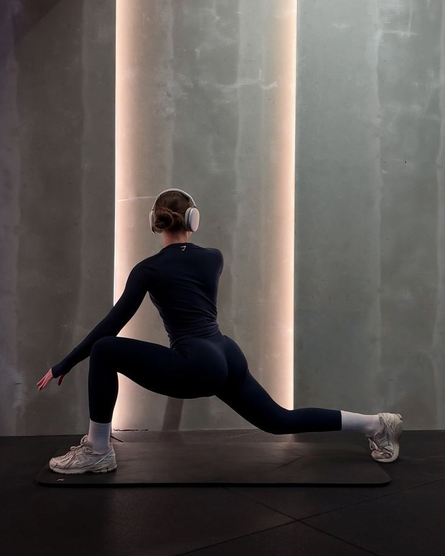

35 moves · 4 families
The
library
Every move, a home and a gym version.
All
Lower body
Upper body
Core
Cardio
Mobility
Move of the week
Hip
thrust
Glutes · hamstrings · 3 variations
Your
block
Foundations · 12 moves
Lower
Goblet squat
Quads · glutes · core
Lower
Romanian deadlift
Hamstrings · glutes · back

Upper
Single-arm row
Back · core
Upper
Lat pulldown
Back · biceps

Lower
Reverse lunge
Quads · glutes · balance
Cardio
Brisk walk, zone 2
Heart · recovery
See all 35 moves